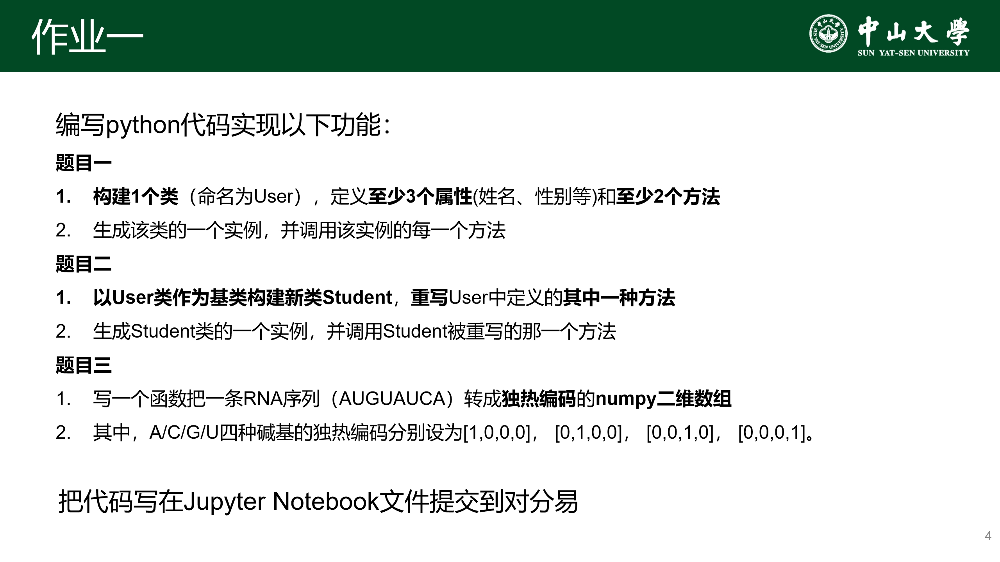
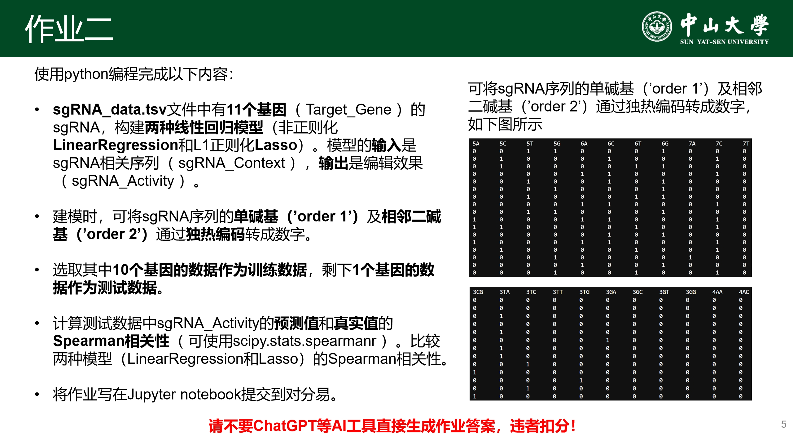
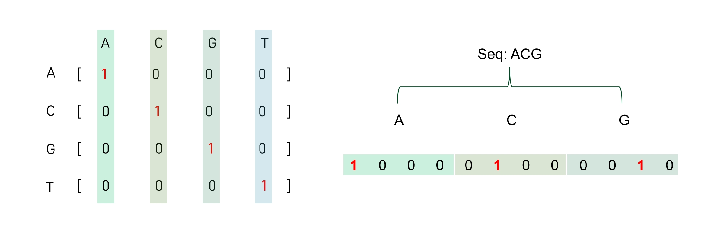

课程作业
关于 Python，可以参考以下在线资料或书籍：
不推荐使用 ChatGPT 等工具直接生成答案，作业的重点在于理解和培养编程思维，每一个作业都不存在标准答案。如发现 AI 作答将视情况扣分。某些特定的代码操作（例如数据处理等）和报错信息可以询问 AI 以得知具体解决方法：
Q：Python DataFrame 如何提取出某列的所有独特值？
A：你可以使用
unique()方法来提取某列的所有独特值。以下是一个示例：import pandas as pd # 创建示例 DataFrame data = { 'A': [1, 2, 3, 2, 1], 'B': ['x', 'y', 'x', 'z', 'y'] } df = pd.DataFrame(data) # 提取列 'A' 的所有独特值 unique_values_A = df['A'].unique() # 提取列 'B' 的所有独特值 unique_values_B = df['B'].unique() print("Column A's unique values:", unique_values_A) print("Column B's unique values:", unique_values_B)Column A's unique values: [1 2 3] Column B's unique values: ['x' 'y' 'z']
作业 1
该作业的主要目的是熟悉 python 的基本操作，包括类的构建、实例化、重写及具体方法的实现。
关于类的概念和实现可参考：https://www.runoob.com/python3/python3-class.html
关于独热编码的概念和实现可参见下述作业 2。
作业 2
该作业的主要目的是基于生物学数据进行数据的预处理，并通过线性模型完成指定生物学任务。
在作业附件中，有提供数据文件 sgRNA_data.tsv，你可将其移动至与 jupyter notebook 文件相同的文件夹并通过 pandas 库对其进行读取：
import pandas as pd
data = pd.read_csv("./sgRNA_data.tsv", sep="\t")
数据文件
该文件中需关注的列及其含义分别如下：
sgRNA_Context：sgRNA + context，从第五个碱基开始到第二十五个碱基为 sgRNA 的序列（可以通过字符串切片操作将其挑取出来）。Target_Gene：该 sgRNA 靶向的基因。sgRNA_Activity：sgRNA 的编辑效果，为本次作业的预测目标。
关于独热编码
独热编码（One-Hot encoding）是一种常用的分类变量处理方法，其思路是将每个类别值转换为一个二进制向量：
创建一个长度为类别总数的向量。
对于各类别所对应的位置标记为 1，其余位置标记为 0。
以该作业的情况为例，在使用单碱基独热编码时，共四种情况：
其中，四种碱基 A C G T 分别对应一个长度为 4 的向量，并仅在一个对应位置上为 1（其他皆为 0）。对于一段序列（例如上图中的 ACG），可将其所有的碱基转换为对应向量并串联，即可得到该序列对应的独热编码结果。对于二碱基独热编码同理，共有 16 种可能的二碱基组合，其中每一种组合都对应一个长度为 16 的向量。
为了得到每条 sgRNA 序列的独热编码结果，你可以使用字典保存每一种单碱基（二碱基）和对应向量的关系，通过 for 循环遍历该序列的单碱基（二碱基）并将把对应向量保存至同一个列表中，最后使用 numpy 的 concatenate 将其串联至一起，以下是一个示例：
import numpy as np
one_hot_list = [
[1, 0, 0, 0],
[0, 0, 0, 1],
[0, 1, 0, 0]
]
np.concatenate(one_hot_list)
array([1, 0, 0, 0, 0, 0, 0, 1, 0, 1, 0, 0])
具体的实现方式非常多，以上只是其中的一个思路，仅作参考用。
挑选基因
该作业使用留一基因法进行验证，其他在生物学中常见的类似操作还有留一染色体验证，留一个体验证等。某些场景下，这种计算方式能更准确地评估模型的泛化能力。
你可以通过 random 或 numpy 库随机挑选一个基因，也可自行挑选。作为拓展，如果你感兴趣，也可以试试通过留一基因交叉验证生成一个折外预测集（out-of-fold）进行模型评估。
参考材料
数据框的处理可参考 Pandas 数据结构 - DataFrame，矩阵的处理和转换可参考 NumPy 教程。
线性模型的使用可参考 scikit-learn 页面：LinearRegression / Lasso。
思考
独热编码的优点有哪些？缺点有哪些？
Lasso 中 Alpha 的值不同时，模型表现会发生怎样的变化？